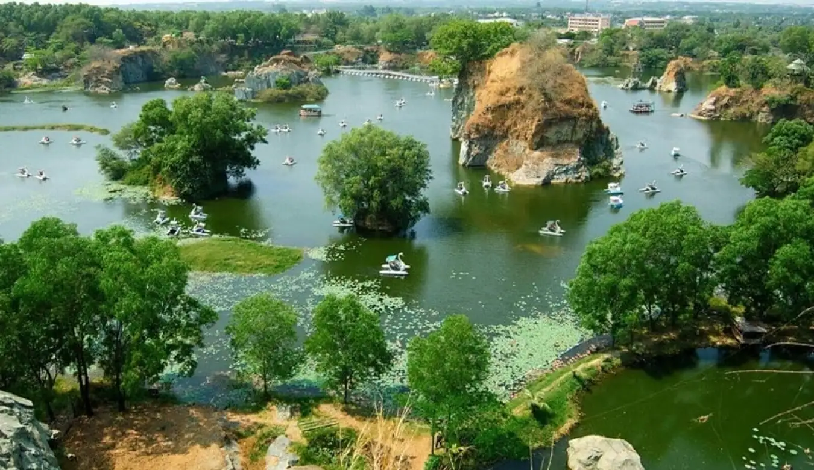

HELLO, IT'S NICE TO MEET YOU

Đồng Nai là một tỉnh thuộc vùng Đông Nam Bộ trên cơ sở hợp nhất 2 tỉnh cũ là Biên Hòa và Long Khánh, Việt Nam.
Đây là tỉnh đông dân thứ 5 cả nước sau Thành phố Hồ Chí Minh, thành phố Hà Nội, tỉnh Thanh Hóa và tỉnh Nghệ An.
Đồng Nai có nhiều di tích lịch sử, văn hoá và các điểm du lịch có tiềm năng: Văn miếu Trấn Biên (Biên Hòa), đền thờ Nguyễn Hữu Cảnh,
khu du lịch Bửu Long, khu du lịch ven sông Đồng Nai, Vườn quốc gia Nam Cát Tiên, làng bưởi Tân Triều, khu du lịch sinh thái Thác Mai - hồ nước nóng, Đảo Ó, chiến khu Đ, mộ cổ Hàng Gòn, đàn đá Bình Đa, khu du lịch thác Giang Điền, khu du lịch Long Châu Viên (Xuân Tân, Long Khánh), khu du lịch Vườn Xoài, khu di tích cấp quốc gia núi Chứa Chan (núi Gia Lào), Hồ Núi Le (Xuân Lộc), trung tâm hành hương Đức Mẹ núi Cúi (Gia Kiệm),
khu du lịch Suối Mơ, làng du lịch Tre Việt, khu du lịch Bò Cạp Vàng, khu du lịch sinh thái Thủy Châu.
Du lịch Đồng Nai ngoài những thắng cảnh đẹp của sông nước vùng Đông Nam Bộ, bạn còn có cơ hội trải nghiệm nền ẩm thực của địa phương mang đậm bản sắc văn hóa nơi đây.
xin tổng hợp các món ăn đặc sản Đồng Nai ngon hấp dẫn để bạn có thể lựa chọn và thưởng thức những món ăn mà mình yêu thích trong chuyến du lịch sắp tới.
Chỉ cần một lần đặt chân đến mảnh đất Đồng Nai, mọi du khách đều sẽ bị mê hoặc bởi thiên nhiên núi rừng hùng vĩ, con người thân thiện và nhiều món ăn hấp dẫn.
Và điều mà nhiều du khách cảm thấy tò mò nhất chắc hẳn là đặc sản Đồng Nai phải không nào? Vậy vùng đất này có những món ăn nào có thể khiến du khách hấp dẫn đến như vậy!
Hãy để VN Foods giúp bạn hiểu hơn về văn hoá ẩm thực nơi đây nhé!